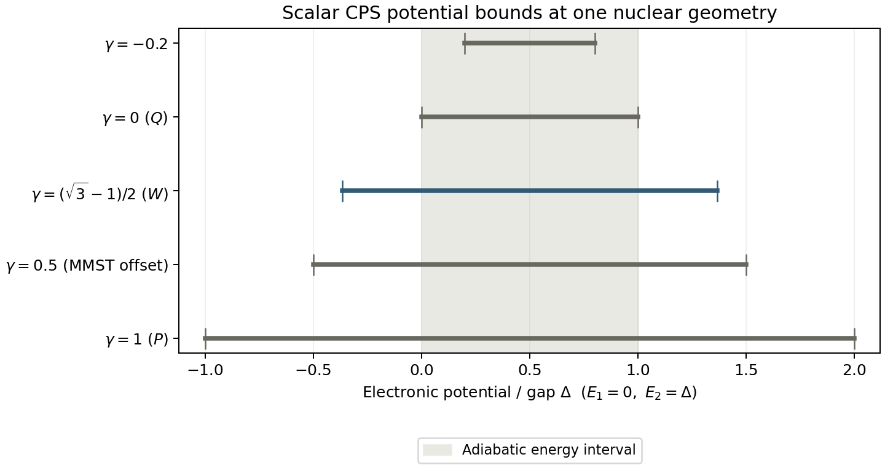

MQC Series - Part VI
CPS, Dual Kernels, and Classical Dynamics
Part IV introduced oscillator mapping and raw-action excursions; Part V introduced spin mapping and Spin-MInt. Together they raise a sharper question: if CPS has an exact mapping kernel and an exact dual kernel, what does it calculate more accurately than MMST? This article follows the questions behind that comparison: what a phase-space point represents, how a pure state is sampled, why the dual is needed, and where classical nuclear feedback introduces error.
Correctly formulated MMST and CPS are both exact electronic representations. CPS does not possess a general theorem of more accurate observables. Its useful distinctions concern the phase-space measure, identities enforced at each point, and the approximations made when those points become classical trajectories. Here CPS means constraint coordinate–momentum phase space; the derivation concerns its scalar, fixed-parameter construction. Matrix-valued and other dynamical extensions require additional equations.
Notation bridge. Parts IV and V put their parameter inside \(\tfrac12(xx+pp-\Gamma\delta)\). Here the population offset is outside that factor: \(J_n-\gamma\). Thus \(\Gamma=2\gamma\). Ordinary MMST's oscillator subtraction is \(\Gamma=1\), or \(\gamma=1/2\) here. All parameter values below use the latter convention. Set \(\hbar=1\), use an orthonormal diabatic basis of \(F\) electronic states, and reserve \((R,P)\) for nuclear coordinates and momenta.
A Kernel Is Not a Density Matrix
The first difficulty is that the object used in the force or population formula may look like a density matrix while failing positivity. Define the dimensionless mapping amplitudes and actions by
The scalar CPS constraint and kernel are
The radius is real and nonzero precisely when \(s>0\). The constraint gives \(\operatorname{Tr}K_\gamma=1\) at every point. Write \(z=\sqrt{s}\,u\), with \(u^\dagger u=1\), and \(\Pi=|u\rangle\langle u|\). Then
For positive \(\gamma\), this kernel has negative eigenvalues. That is compatible with exact operator reconstruction: it is an operator-valued phase-space kernel, not a physical density assigned to one trajectory. The projector \(\Pi\) is a physical pure-state density; \(K_\gamma\) generally is not. Its diagonal symbol \(J_n-\gamma\) therefore need not be a probability.
This distinction changes the interpretation of the force-free diagnostic in Part IV. Negative individual population symbols \(J_n-\gamma\) establish the range of a symbol. They do not, by themselves, establish incorrect electronic dynamics or energy transfer into nuclei. Those require an ensemble observable and a dynamical comparison.
Why a Sphere Leads to Projective Space
The norm constraint puts the Cartesian variables on \(S^{2F-1}\). Multiplying all amplitudes by the same phase leaves \(zz^\dagger\), the Hamiltonian, and every kernel symbol unchanged. Removing that redundant \(U(1)\) phase gives
The physical direction has \(2F-2\) real degrees of freedom. The quotient on the right says that \(SU(F)\) rotations can move a reference ray to any other ray, while transformations preserving it are redundant. This is the geometric connection to spin mapping; it does not require interpreting the fictitious oscillators as actual electronic vibrations.
The existing mathematical foundations derive the generators. Recall only the normalization needed here: \(\operatorname{Tr}(T_aT_b)=\delta_{ab}/2\). Expand
Although there are \(F^2-1\) spin components, they are constrained. Purity gives \(\sum_a q_a^2=2(F-1)/F\), but a fixed length alone does not specify the physical orbit when \(F>2\). The full rank-one condition is
Thus a “generalized Bloch sphere” must not be understood as every vector on a sphere in \(\mathbb R^{F^2-1}\). For two states, \(\mathbb{CP}^1\) really is the ordinary Bloch sphere. With a unit vector \(\boldsymbol n\), \(K_\gamma=(I+s\,\boldsymbol n\cdot\boldsymbol\sigma)/2\). At positive \(\gamma\), its Bloch-vector length \(s>1\), making the distinction between the physical direction and the kernel especially visible.
The Dual Comes from a Trace Identity
What physical requirement determines the readout kernel? The requirement is that phase-space averaging reproduce the quantum trace pairing for arbitrary electronic operators. It is an operator-reconstruction condition, not a condition fitted to a particular population curve.
Use the invariant, normalized measure \(d\mu(u)\), with \(\int d\mu=1\). For any operator \(A\), define \(a_\gamma(u)=\operatorname{Tr}[A K_\gamma(u)]\). The target is
The factor \(F\) is essential. Some spin-mapping papers instead use \(d\Omega=F\,d\mu\), whose total measure is \(F\); their formulas absorb this factor into the measure.
The invariant first and second moments supply the derivation:
Here \(\mathsf S\) swaps the two tensor factors. Contracting the second moment with \(A\otimes B\) gives
This second moment is what fixes the dual's scale.
Derivation using the trace and traceless sectors
Write \(A=A_0I+\widetilde A\), with \(A_0=\operatorname{Tr}A/F\) and \(\operatorname{Tr}\widetilde A=0\); likewise for \(B\). If \(\bar K=\bar s\Pi-\bar\gamma I\) has trace one, the two symbols are \(a_\gamma=A_0+s\,u^\dagger\widetilde A u\) and \(\bar b=B_0+\bar s\,u^\dagger\widetilde B u\). The first moment removes both mixed terms. The second gives
The exact trace is \(F A_0B_0+\operatorname{Tr}(\widetilde A\widetilde B)\). Therefore \(s\bar s=F+1\), while trace normalization gives \(\bar s-F\bar\gamma=1\).
Solving these two requirements gives the dual:
The dual is another member of this scalar family, evaluated on the same normalized direction \(u\), with \(\bar s=(F+1)/s\). Its Cartesian radius differs when \(s\ne\bar s\). Using a dual with a different parameter does not mean propagating a second nuclear trajectory at that parameter. “Inverse kernel” refers to inversion of the operator reconstruction map; it does not mean taking the ordinary matrix inverse \(K_\gamma(u)^{-1}\) at each point.
Once \(K_\gamma\) and the measure are chosen, this dual is fixed. Choosing a kernel merely because its diagonal entries look reasonable, then choosing an unrelated readout, can introduce an error even at the initial time.
Is Spin Mapping Just a Choice of Gamma?
For the coherent-state Q/P/W constructions discussed in Part V, the scalar CPS kernel gives a direct bridge:
| Representation | \(\gamma\) | \(s=1+F\gamma\) | Dual |
|---|---|---|---|
| Q | \(0\) | \(1\) | P |
| W | \((\sqrt{F+1}-1)/F\) | \(\sqrt{F+1}\) | W |
| P | \(1\) | \(F+1\) | Q |
Self-duality requires \(s=\bar s\), so \(s^2=F+1\). For \(F=2\), \(\gamma_W=(\sqrt3-1)/2\approx0.3660\); Part V's parameter is \(\Gamma_W\approx0.7321\). These are the same kernel in two conventions.
The group-theory interpretation agrees. The quantum quadratic Casimir is \(\sum_aT_a^2=(F^2-1)I/(2F)\). Because the kernel symbol of \(T_a\) is \(s q_a/2\),
Matching the Casimir value gives the same W scale \(s^2=F+1\). This explains the distinguished parameter through symmetry and trace reconstruction, rather than empirical adjustment. It establishes no general theorem that W gives the most accurate coupled dynamics.
Thus, at the level of these scalar kernels and Cartesian Hamiltonians, W spin mapping corresponds to a particular CPS parameter. A complete spin-mapping algorithm also specifies its invariant measure, initial-state preparation, correlation-function estimator, identity treatment, and propagator. Spin-MInt is an integration scheme for that Hamiltonian. Calling every spin-derived method “CPS with another gamma” would omit those choices; surface hopping and partially linearized schemes can change the dynamics substantially.
Why a Pure State Can Still Be an Ensemble
A pure electronic state is one ray, but a phase-space representation of its operator can be a function over many rays. For \(\rho_0=|k\rangle\langle k|\), the initial symbol in this convention is
It is not a delta function at \(u=|k\rangle\). With uniform independent sphere samples, the average takes the form
This can be described as equal averaging of weighted contributions. It is not generally equal averaging of ordinary populations. The weights can be signed; their ensemble normalization is \(\int Ff_{\rho_0,\gamma}d\mu=1\), not necessarily one on each trajectory.
Uniform sampling is one implementation, not a demand to visit every point of a continuum. Importance sampling can absorb a positive part of the weight into the proposal distribution, leaving the appropriate residual weight. Convergence is controlled by variance and the dynamical observable, not simply by whether the electronic state is pure.
Focused initialization is a different useful construction. At nonnegative \(\gamma\), setting \(J_k=1+\gamma\), \(J_{n\ne k}=\gamma\) and averaging independent phases gives \(\langle K_\gamma(0)\rangle=\rho_0\). That first-moment condition is sufficient for exact electronic evolution along a common prescribed nuclear path, with the corresponding \(K_\gamma\) readout. It does not prove equivalence to full-sphere weighted sampling after each sample generates its own nuclear path.
At \(\gamma=0\), a focused pure-state kernel is the physical density, and its scalar propagation becomes ordinary Ehrenfest. A generic full-sphere Q ensemble with weights and a P dual is not automatically the usual focused Ehrenfest calculation. Keeping initialization, propagation, and readout separate resolves this apparent contradiction.
Exact Representation Does Not Make Nuclear Feedback Exact
The scalar trajectory Hamiltonian is
Canonical equations for \((x,p)\) give
For real symmetric \(V\), this is exactly the usual scalar MMST Hamiltonian written as \(\sum_{nm}V_{nm}[(x_nx_m+p_np_m)/2-\gamma\delta_{nm}]\), with the notation bridge above. At the same \(\gamma\), same Hamiltonian, and same initial phase-space point, calling it CPS does not change the equations of motion.
If \(R(t)\) is prescribed, all samples share the same electronic unitary \(U(t)\). Then \(K_\gamma(t)=U(t)K_\gamma(0)U(t)^\dagger\), and the dual transforms identically. The trace identity therefore recovers the exact electronic expectation. Correct MMST projection and readout can also reproduce this limit; exact subsystem propagation is not unique to CPS.
With self-consistent classical feedback, however, \(R_\alpha(t)\) depends on the mapping sample. There is no longer one common \(U(t)\) that can be moved through the ensemble integral. The full quantum electron–nuclear system also contains nuclear wavepacket splitting, interference, and correlations that an ensemble of independent classical paths does not generally retain.
This is a limit of the chosen dynamics. The dual still matters for reconstructing the observable within that representation, but it cannot restore quantum evolution omitted by the propagator. Increasing the trajectory count removes sampling error; it does not remove this dynamical bias. The CPS formulation itself distinguishes an exact phase-space expression from the later approximation used for nuclear dynamics.
This is not a no-go theorem for every CPS-based method. More complete quantum propagation or additional dynamical terms can recover information omitted by independent classical paths, and simple classical propagation can be exact in special limits. The error belongs to the specified approximation, not to the existence of a phase-space representation.
What Actually Leaks?
\(J_n\) is an action in the dimensionless mapping convention, not an electronic energy. An isolated physical oscillator with frequency \(\omega\) would have energy \(\hbar\omega J\) in an appropriate semiclassical notation. The fictitious mapping modes instead enter through the matrix \(V(R)\), including off-diagonal couplings; their actions alone cannot be read as independent mode energies.
Hermitian electronic evolution conserves \(\sum_nJ_n=s\), even while action moves between modes. Thus a negative \(J_n-\gamma\) is neither loss of total action nor, by itself, proof of leaving a quantum Fock sector. Individual Wigner phase-space points do not carry literal Fock-state labels.
A real dynamical concern appears when the same signed kernel controls the nuclear force. At one fixed geometry, diagonalize \(V\) with energies \(E_k\). The mapped electronic potential is
Since \(s>0\), its extrema over the sphere are
For positive \(\gamma\), the mapped potential can lie below the lowest adiabatic energy. Such regions can produce inappropriate nuclear forces or energy exchange in a classical approximation. A smaller positive parameter reduces this possible extension. It does not prove that a trajectory reaches the bound, or that a particular amount of energy is transferred. The bound is local in nuclear geometry, not a universal nuclear-heating budget.

The distinction matters for spin mapping: fixing the norm removes radial freedom, but W still has a negative kernel eigenvalue. It does not universally eliminate every effect called ZPE leakage. At negative \(\gamma\), the raw kernel may be positive while the dual readout is signed; its diagonal range does not restrict the exact reconstructed population to that same range.
Equilibrium requires another check. Quantum detailed balance contains Boltzmann factors for electronic gaps. A classical thermal distribution over a sphere does not generally reproduce those factors merely because the kernel is exact or the radius is fixed. Claims about long-time relaxation must therefore be tested separately from normalization, energy conservation, and exact isolated-electronic motion.
A Concrete CPS Advantage, Without a Universal Ranking
The most direct structural example is a common electronic potential. Split \(V(R)=u(R)I+\widetilde V(R)\), where \(u(R)=\operatorname{Tr}V(R)/F\). The common term generates a real nuclear force even though it changes electronic coefficients only by a global phase. In CPS,
on every trajectory. In a direct unprojected Cartesian MMST classicalization that represents the electronic identity through the total oscillator number, at offset \(\gamma=1/2\),
If radial samples make that coefficient fluctuate, the same common potential produces different nuclear forces. Exact operator projection can recover the proper quantum answer; nonlinear classical feedback does not inherit that cancellation automatically. CPS enforces the coefficient one at each point.
This example requires \(u(R)\) to depend on nuclear geometry; a constant energy shift produces no nuclear force. It is also not a defect of every MMST algorithm: separating the identity term or using an appropriate traceless construction can repair it. Part IV's focused initialization already fixes the total action, so that particular protocol does not have this radial force-factor fluctuation. The useful CPS property is that normalization is built into the phase space.
| Question | What CPS establishes | What remains to be checked |
|---|---|---|
| Exact observable reconstruction | A compact electronic kernel and matched dual | MMST also has exact projected reconstruction; no universal advantage in exactness |
| Classical force structure | Trace-one force kernel at every scalar CPS point | Positivity, branching, equilibrium and comparison with repaired MMST |
| Choice of parameter | A family of exactly paired representations, with a distinguished self-dual W choice | Dynamical bias, estimator variance and transferability across observables |
| Numerical propagation | A Hamiltonian that can use norm-preserving electronic steps | Time-step convergence and the physical accuracy of classical nuclear motion |
Changing \(\gamma\) can improve a particular approximate calculation. A defensible choice uses a controlled reference and observables specified before selecting the parameter, then tests other conditions. Tuning one population curve does not establish a universal parameter or simultaneously correct forces and detailed balance. Likewise, the closer Spin-MInt curve in Part V compares complete protocols with different parameters and sample counts; it is not an isolated proof that CPS is intrinsically more exact than MMST.
A Check That Separates Readout Error from Dynamics Error
A small electronic-only calculation makes the distinction reproducible. Take a two-state Hamiltonian, a coherent pure state, and \(\hbar=1\):
The reference is the direct matrix-exponential density \(e^{-iVt}\rho_0e^{iVt}\). The phase-space calculation independently integrates the initial symbol and propagated dual over \(\mathbb{CP}^1\), using 6 Gauss-Legendre polar nodes and 12 uniform azimuths. Refinement uses 10 and 20. Four times \(t=0,0.7,1.4,2.1\) and all five parameters in the interval figure are checked. The declared tolerance is \(10^{-12}\) for the full complex density matrix on each grid, trace pairing, kernel normalization, weight normalization, and the population difference between quadrature grids.
With the matched dual, every parameter passes the electronic reconstruction check. The maximum full-density error on the primary grid is \(7.8\times10^{-16}\), and the maximum population difference under refinement is \(5.6\times10^{-16}\). Reusing the original kernel as the readout passes only at W, where it is its own dual. For example, at \(t=0\), the exact population is 0.7. With \(\gamma=1/2\), replacing the dual by the same kernel gives \(0.5+(4/3)(0.7-0.5)=0.766\ldots\), already wrong before any propagation. This is precisely where the dual helps: it removes representation-induced readout error. It does not compare approximate nuclear dynamics.
The machine-readable checks record the actual errors and quadrature refinement; the population table retains both the matched and deliberately mismatched readouts. The calculation is deterministic, so no Monte Carlo confidence interval or sampling-convergence claim is attached to it.
- cps_dual_kernel_checks.py reproduces the reconstruction checks, the negative-control readout, and the analytic interval figure. It requires NumPy and Matplotlib and can run from the site repository root.
- Vector interval figure provides the same analytic bounds in SVG format.

python assets/code/mqc/cps_dual_kernel_checks.pySources for the Specific Claims
This is a synthesis of the questions above, not a catalogue of the CPS literature. The derivation check is an added illustration, not a reproduction of a published molecular benchmark.
- M. Thoss and G. Stock, “Mapping approach to the semiclassical description of nonadiabatic quantum dynamics,” Physical Review A 59, 64 (1999). Journal. Supports the distinction between an exact mapping transformation and subsequent semiclassical evaluation.
- X. He, Z. Gong, B. Wu, and J. Liu, “Negative Zero-Point-Energy Parameter in the Meyer–Miller Mapping Model for Nonadiabatic Dynamics,” Journal of Physical Chemistry Letters 12, 2496–2501 (2021). Journal · Open manuscript. Supports the constrained kernel, admissible parameter range, inverse mapping kernel, and distinction between exact reconstruction and approximate nuclear propagation.
- J. E. Runeson and J. O. Richardson, “Generalized spin mapping for quantum-classical dynamics,” Journal of Chemical Physics 152, 084110 (2020). Journal · Open manuscript. Supports the SU(F) / Stratonovich-Weyl connection, the W scale, identity separation, and focused versus full-sphere initialization.
Answers to the Original Questions
Must a pure state be sampled over the entire sphere?
Full-sphere weighted sampling is one exact representation. Importance sampling, deterministic quadrature, and appropriate focused constructions are alternatives. They must retain their own normalization and readout conventions; their coupled classical dynamics need not agree.
Does a correct dual make an arbitrary gamma just as good?
It makes the electronic operator reconstruction equally exact. After classical nuclear feedback, different parameters generally produce different forces, paths, variances, and biases. Exact static duality does not rank those approximate dynamics.
Why do some methods prefer the same mapping and readout kernel?
W self-duality gives a symmetric operator pairing and removes the need for two different kernels in that construction. It is a mathematically distinguished choice. It is not a proof of optimal population accuracy or exact thermal relaxation.
Does a fixed sphere or W spin mapping solve ZPE leakage?
It controls the radius and treats the electronic identity exactly at each point. Positive-offset W kernels still have negative eigenvalues and can generate potentials below the lowest adiabatic energy. Neither a negative individual symbol nor its absence is enough to decide whether an ensemble calculation is physically accurate.
What is better about CPS than properly formulated MMST?
There is no general improvement in exact observable reconstruction: both can be exact. CPS supplies a compact finite-state geometry and convenient pointwise identities, and exposes the choices of measure, initial symbol, force kernel, and readout. When those choices and the scalar propagation are matched to an MMST implementation, the algorithms can coincide. A practical accuracy advantage must come from a concrete difference and survive a controlled benchmark.